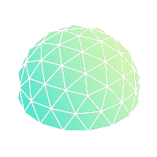
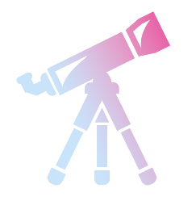

About
The Advanced Darksky Observatory at IIT Hyderabad is the first in-campus research observatory among all IITs which aims to provide both cutting edge astronomy and engineering research. It was inaugurated by Dr. K. Radhakrishnan (former Chairman, ISRO) on 28th February, 2023
Dome
The massive 900 kg dome is semi-automatic with remote operation and automatically tracks the movement of celestial sources across the sky. It is in the process of upgradation with fully robotic functioning with rain and cloud sensors auto-tracking of celestial sources.
Telescope
It will host a 0.5-meter Robotic optical telescope (largest among small telescope categories) which will have a magnification of ~1000x, capabilities of resolving a structure as small as 25 km on the surface of the moon, individual rings of Saturn, detecting active galaxies up to 1.5 Giga light-years (1419 billion light years) distanceCapabilities
The limiting apparent visual magnitude of the proposed system will be 16.8, which allows us to detect and monitor at least 160 million stars, 1126 galaxies, 370 nebulas and all planets with their satellitesOptical system
Adaptive optic assisted camera will be utilised for imaging, which will be the first of its kind. The camera will improve the image resolution drastically such that individual cyclones on the surface of Jupiter can be tracked. This will also be a testbed for future Adaptive Optics Research in the instituteData
The observatory will produce the sharpest images so far for a 0.5 m telescope and provide a unique image and filter spectroscopy databank from individual observation to researchers and the publicMonitoring
Due to its full robotic capabilities, the observatory will soon be integrated into the NASA’s Global Telescope Network (GTN) system for urgent alerts to the scientific communities on transient celestial events, asteroids, and meteoritesSupport
It will also complement ISRO’s current and future space-based astronomical observatories like AstroSat, and Polix